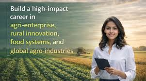
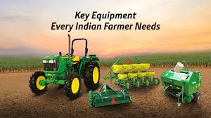
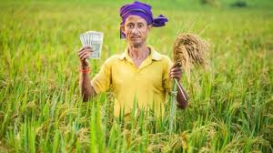

தமிழகத்தின் முன்னணி வேளாண் சேவை நிறுவனம். விவசாயிகளின் வருமானத்தை அதிகரிக்கவும், நிலையான விவசாயத்தை ஊக்குவிக்கவும் — சரியான ஆலோசனை, அரசு திட்ட நுழைவு மற்றும் முழுமையான உதவி பெறுங்கள்.
🆓 இலவச விவசாய ஆலோசனை
அழைக்கவும்: 9092910945
20,000+ மகிழ்ச்சியான விவசாயிகள்
உங்கள் வேளாண்மை வளர்ச்சிக்கான மிக நம்பகமான பங்காளி — விவசாயிகளுக்காகவே பிறந்த நிறுவனம்
கடந்த பல ஆண்டுகளாக ஆயிரக்கணக்கான விவசாயிகளுக்கு வேளாண் ஆலோசனை மற்றும் உதவி வழங்கி வருகிறோம். உயர்தர சேவையை எப்போதும் உறுதி செய்கிறோம்.
விவசாயியின் வருமான உயர்வே எங்கள் முதல் குறிக்கோள். விவசாய மானியம், பதிவு மற்றும் பல அரசு திட்டங்களில் முழு உதவி பெறுங்கள். அவரின் வெற்றியே எங்கள் வெற்றி.
இயற்கை மற்றும் நவீன தொழில்நுட்பத்தை இணைத்து, நிலையான விவசாய முறைகளை ஊக்குவிக்கிறோம். சரியான வழிகாட்டுதலால் விளைபொருள் பெருக்கம் உறுதி செய்கிறோம்.
எந்த விவசாயக் கேள்விக்கும் இலவசமாக பதில் அளிக்கிறோம். WhatsApp அல்லது தொலைபேசி மூலம் இன்றே தொடர்பு கொள்ளுங்கள்!
பல்வேறு அரசு திட்டங்களுக்கான முழு ஆலோசனை மற்றும் உதவி
விவசாயிகளுக்கான வெவ்வேறு மானியம் திட்டங்களில் விண்ணப்பம் மற்றும் ஆண்டு செயல்முறை
அதிகார பூர்வ அரசு திட்டங்களைப் பற்றி விரிவான தகவல் மற்றும் விண்ணப்ப செயல்முறை
விவசாய நிலத்தின் பதிவு, உரிமை ஆவணம் மற்றும் சட்ட ஆலோசனை
உங்கள் நிலத்தின் மண் பரிசோதனை, பகுப்பாய்வு மற்றும் சரியான உரம் பரிந்துரை
வேளாண் தொடர்பான கடன், பெருக்க கடன், மற்றும் கடன் தொடர்பான ஆலோசனை
பயிர் காப்பீட்டு திட்டம், விண்ணப்பம் மற்றும் நட்ட ஈடுசெய்வு பெறுவதற்கான உதவி
விவசாய இயந்திரங்களுக்கான மானியம், கொள்முதல் வழிகாட்டுதல் மற்றும் பழுதுபார்க்கும் தகவல்
வெவ்வேறு பயிர் வகைகளுக்கான உற்பத்தி மாற்று பாடம் மற்றும் பயிர் பேரணி
மரக்கன்று வழங்குவது முதல் நவீன விவசாய தொழில்நுட்பம் வரை — அனைத்தும் ஒரே இடத்தில்
எந்த வேளாண் கேள்விக்கும் உடனடி பதில் மற்றும் ஆலோசனை பெறுங்கள். WhatsApp கேட்டலாக் மூலம் இப்போதே ஆர்டர் செய்யுங்கள். வீட்டிற்கே விரைந்து வழங்குகிறோம்.

நவீன வேளாண் தொழில்நுட்பம், பூச்சி மேலாண்மை, நீர் மேலாண்மை மற்றும் சரியான வேளாண் முறைகளுக்கான பயிற்சி நிகழ்ச்சிகள்.

உயர்தர விதைகள், உரங்கள், மண்ணுயிர் உரங்கள், பூச்சிக்கொல்லிகள் ஆகியவற்றை சிறந்த விலையில் வழங்குகிறோம்.
தொழில் வல்லுநர்களுக்கு தொலைபேசி வாயிலாக வழங்கப்படும் தனிப்பட்ட, நிகழ்நேர ஆதரவு. பூச்சி, மண், நீர் — அனைத்து தலைப்புகளிலும் இலவச ஆலோசனை.
உங்கள் விவசாய நிலத்தில் நேரிலும் ஆலோசனை மற்றும் வேளாண் பிரச்சனை தீர்வு பெறுங்கள். மாதிரி பண்ணை உருவாக்கம் மற்றும் நவீன தொழில்நுட்ப செயல்முறை நடைமுறை.

விவசாய அறிவு மையம் குறித்த யோசனை, நிலம் தொடர்பான கொள்கை ஆலோசனை மற்றும் விவசாய வருமான திட்டமிடல் சேவை.
தரமான, ஆரோக்கியமான நாற்றுகள் — உங்கள் பண்ணைக்கு சரியான தேர்வு
வலிமையான, அதிக வருமானம் தரும் தேக்கு மரக்கன்றுகள். நீண்ட ஆயுட்காலம் கொண்ட சிறந்த முதலீடு.
விரைவில் வளரும், சந்தை மதிப்பு மிகுந்த மகோகனி கன்றுகள். விவசாயிகளுக்கு சிறந்த பொருளாதார வாய்ப்பு.
அரிய, விலை மதிப்பற்ற சந்தன மர கன்றுகள். நீண்டகால முதலீட்டிற்கான சிறந்த தேர்வு.
கேசர், ஆல்பன்சோ உள்ளிட்ட தரமான மா நாற்றுகள். அதிக விளைச்சல், சந்தை மதிப்பு மிக்க ரகங்கள்.
அதிக விளைச்சல் தரும் கொய்யா நாற்றுகள். குறைந்த செலவில் அதிக வருமானம் தரும் பயிர்.
நவீன, அதிக வருமானம் தரும் டிராகன் பழ நாற்றுகள். ஏற்றுமதி சந்தையில் மிகவும் வரவேற்கப்படும் பழம்.
விரைந்து வளரும், அதிக விளைச்சல் தரும் நாற்றுகள். தினசரி வருமானத்திற்கான சிறந்த தேர்வு.
பாரம்பரிய மதிப்பு மிக்க பழ மர நாற்றுகள். தமிழக சந்தையில் எப்போதும் தேவையுள்ள பழ வகைகள்.
அனுபவம், நம்பகமை மற்றும் விளைபொருள் வளர்ச்சியின் நம்பகமான பங்காளி
20 ஆண்டுகளுக்கும் மேல் வேளாண் ஆலோசனை மற்றும் விவசாயி சேவைகளில் ஆழமான நிபுணத்வம். ஒவ்வொரு விவசாயியின் தேவைக்கும் ஏற்ற தனிப்பயனான தீர்வுகள்.
சிறிய விவசாயிகள் முதல் பெரிய விவசாய நிலம் வரை அனைவருக்கும் சரியான ஆலோசனை. இலவச ஆலோசனை மூலம் உங்கள் விவசாயத்தை மேம்படுத்துங்கள்.
அனைத்து அரசு வேளாண் திட்டங்கள், மானியம் மற்றும் நிர்வாக செயல்முறைகளில் ஆழமான நிபுணத்வம். உங்கள் உரிமைகளை பெற உதவுகிறோம்.
20,000க்கும் மேற்பட்ட திருப்தி விவசாயிகள் மற்றும் 25+ மாவட்டங்களில் சேவையுடன் நம்பகமையான பங்காளி. உங்கள் வெற்றியே எங்கள் இலக்கு.
விவசாயிகளின் வளர்ச்சி மற்றும் அவர்களுடைய குடும்பத்தின் சந்தோஷமே எங்களுடைய லட்சியம். விவசாயி வளர்ந்தால் தமிழகம் வளரும்.
சுற்றுசூழல் ஆர்வமுள்ள நடைமுறைகள் மற்றும் மண்ணின் சுகாதாரத்தை கவனிக்கும் ஆலோசனை. இயற்கை விவசாயத்தை ஊக்குவிக்கிறோம்.
"தமிழகத்தை இந்தியாவின் முதல் பசுமை மாநிலமாக மாற்ற வேண்டும்"
— டாக்டர் ஏ.பி.ஜே. அப்துல் கலாம்
விவசாயிகள் பொருளாதார வளர்ச்சி அடையவும், இளைஞர்களின் வாழ்வாதாரத்தை மேம்படுத்தவும் உதவுவதே எங்கள் தலையாயக் குறிக்கோள். இன்றைய சூழ்நிலையில் விவசாயிகள் எதிர்கொள்ளும் பிரச்சனைகளை தீர்க்க நாங்கள் எப்போதும் தயாராக இருக்கிறோம்.
WhatsApp மூலம் மருதமுத்து அவர்களுடன் நேரிடையாக தொடர்பு கொள்ளுங்கள் மற்றும் உங்கள் வேளாண் சிக்கலுக்கு தீர்வு பெறுங்கள்.
WhatsApp இல் கேட்கதிருநெல்வேலி - உங்கள் வேளாண் ஆலோசனை மையம்
திருநெல்வேலி, தமிழ்நாடு
திங்கள் - சனி: 9:00 AM - 6:00 PM
ஞாயிறு: மூடியிருக்கும்